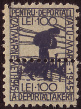
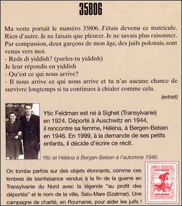

Certains naïfs croient
encore que la philatélie se résume à collectionner les timbres-poste
destinés à affranchir le courrier. Quelle erreur! Feuilletez les
catalogues: vous y trouverez une foule de vignettes non postales allant
des timbres de prévoyance aux timbres-téléphone, des timbres pour
coffres-forts flottants aux timbres de connaissement et des timbres
fiscaux aux timbres de bienfaisance, toute une thématique qui peut se
révéler riche en histoires et en anecdotes Judaïca.
Certains naïfs croient
encore que la philatélie se résume à collectionner les timbres-poste
destinés à affranchir le courrier. Quelle erreur! Feuilletez les
catalogues: vous y trouverez une foule de vignettes non postales allant
des timbres de prévoyance aux timbres-téléphone, des timbres pour
coffres-forts flottants aux timbres de connaissement et des timbres
fiscaux aux timbres de bienfaisance, toute une thématique qui peut se
révéler riche en histoires et en anecdotes Judaïca.
Car on tombe parfois sur des objets étonnants, comme ces timbres de
bienfaisance vendus à la fin de la guerre en Transylvanie du Nord, avec
la légende "Au profit des déportés" et le nom des villes, Satu-Mare (Szatmar)
ou Carei, où ils furent utilisés. Une campagne de charité, en Roumanie,
pour aider les Juifs! Ce fait unique en son genre mérite vraiment qu'on
s'y attarde.
Petit rappel historique: la Transylvanie du Nord, province frontalière éternellement disputée entre la Roumanie et la Hongrie, fut annexée par cette dernière en septembre 1940, ce qui scella le destin des deux cent mille Juifs qui s'y trouvaient. Comme dans le reste de la Hongrie, ils furent massacrés par les "Croix fléchées" hongroises; les survivants furent regroupés dans des ghettos et déportés en quasi-totalité à Auschwitz entre mai et juin 1944.
Par contraste, en Transylvanie du Sud, région restée roumaine et pourtant alliée de l'Allemagne, il n'y eut pas de Solution finale. Le dictateur Antonescu qui, au début de la guerre, avait permis à son armée de participer aux massacres de Jassy et d'Odessa, et qui avait livré les Juifs de Bessarabie et de Bucovine, se montra très prudent dès que la situation militaire se dégrada. Grâce notamment aux interventions du Nonce apostolique, du Métropolite de Sibiu et du grand rabbin Safran, les déportations prévues furent plusieurs fois ajournées puis finalement annulées, et les Juifs fuyant la Transylvanie du Nord à travers les Carpates trouvèrent refuge dans les villes roumaines frontalières comme Turda, où des Roumains les aidèrent au péril de leur vie bien avant que la Roumanie ne change de camp.
Mais revenons à nos timbres, qui ont été réimprimés à l'occasion d'une exposition philatélique tenue à Cluj en avril 2000. On ne sait pas grand-chose d'eux, sinon qu'il en existe deux sortes, avec et sans Maguen David, qu'on les découpait suivant leur perforation horizontale pour en coller une moitié sur le registre de la mairie et l'autre sur le reçu de l'acheteur, et qu'ils ont aussi servi à l'affranchissement du courrier. Mais on ignore qui a décidé de leur diffusion, combien d'exemplaires ont été vendus et qui les a achetés. Quoi qu'il en soit, ces timbres sont rares et chers, et cette manne qui dort dans les archives de Satu-Mare et de Carei devrait inciter les fonctionnaires municipaux à mieux explorer leurs rayonnages. Pourtant, nul ne le fait. À vrai dire, qui, en Transylvanie du Nord, a envie de se replonger dans le passé? Remerciements à Dan Cosma, Cluj.

Le timbre originale. A gauche le timbre réimprimés à l'occasion d'une exposition philatélique tenue à Cluj en avril 2000.
Il y a quelques années, dans
l'avion pour Budapest, je me suis trouvé assis à côté d'une dame, et la
discussion nous a amenés à parler de Satu Mare, dont elle était originaire.
Au retour, je lui ai adressé mon article.
Quelques mois plus tard, elle m'a
envoyé un livre écrit par son mari, ancien déporté, dont la quatrième de
couverture reprend en partie mon article. (C. W.)
